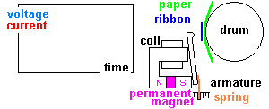
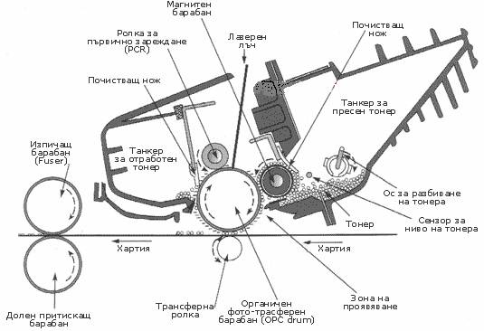
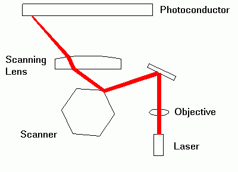
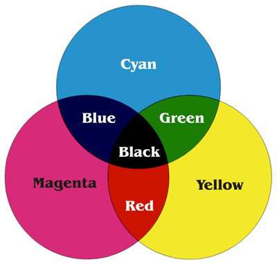

Принтери
Принтерът е устройство, което служи за изобразяване на текст и графика върху дълготраен
носител – хартия, фолио. Има два основни вида принтери, ползвани в персоналните компютри – ударни и безударни. Ударните ползват
механично устройство за нанасяне на отпечатък върху хартията през омастилена лента. Това са матричните принтери. Неударните принтери
ползват топлина, лазер или струя мастило. Това са термичните, лазерните и мастилено-струйните.
Матричен принтер
При този принтер ударният механизъм се състои от подобни на иглички чукчета, които удрят
лентата към хартията. Този принтер е евтин, но и доста шумен. Една от основните характеристики на един матричен принтер е броят на
иглите в печатащата глава. Обикновено са 9- или 24-иглени. Те са разположени в успоредни, шахматно разположени редове, въпреки че
това не е единствената възможност. По-големият брой игли повишава качеството на печата. Главата се движи хоризонтално по листа, за да
бъде отпечатан даден ред и всяка игла се активира, когато е необходимо да се формира даден символ. Ударът е изчислен много прецизно,
за да попадне на определена позиция в матрицата. Иглите се задействат в движение, тъй като печатащата глава не спира, докато не
достигне до края на реда. Някои матрични принтери печатат и в двете посоки, за да постигнат по-голяма скорост. Скоростта на печат се
определя от броя символи, които принтерът печата за една секунда. Измерва се в cps (character per second). Най-известните марки
матрични принтери като Epson, Star, Oki, CPF печатат със скорост от 300 cps, 500 и 1120 cps. Матричните принтери могат да бъдат за
тесен печат – 80 col и широк печат на 136 col.

Термичен принтер
Този принтер е скъп за употреба и изисква специална хартия. Хартията преминава през специална
термична глава, широка колкото самия лист. Главата се управлява от електроника, която в дадени моменти нагрява точки от преминаващата
хартия и те почерняват. При други термични принтери, силно нагорещени иглички се притискат върху лента с восъчно или восъчно-смолисто
покритие, при което разтопеният восък или смола се прехвърля върху разположения под тях лист хартия. Процесът се повтаря четири пъти,
по един път за всеки отделен цвят (обикновено циан, жълт, магента и черен). Термичните принтери са намерили широко приложение във
факсапаратите.
Лазерен принтер
Лазерният принтер е бърз (8, 16, 24, 40 страници в минута), скъп и с висока разделителна
способност. Принципът на действие се основава на факта, че някои материали реагират на светлината по особен начин.
Лазерните принтери използват фини, сухи мастилени частици (наречени тонер), за да създадат изображение върху хартия. Процесът започва
в точката на допиране на електростатично заредения валяк и фоточувствителния барабан. Електростатичният валяк нанася равномерно
електрически заряд върху барабана. Този заряд отблъсква частиците на тонера от барабана. Фоточувствителният барабан се върти спрямо
лазерния лъч, който се движи линейно напред и назад. Навсякъде, където лазерният лъч освети барабана, електрическият заряд се
неутрализира и тези точки привличат тонера от валяка с тонер. Лазерният лъч в действителност рисува черни и сиви области върху
барабана. Барабанът продължава да се върти, пренасяйки изписаното с тонер изображение до контакта с листа хартия. Трансферният валяк
привлича тонера върху хартията, където той полепва. Комбинацията от стопяващ и поддържащ валяк загрява тонера, свързва го с хартията
и създава трайно изображение.

Целта при лазерния принтер е, да се накара лазерния лъч да пише по барабана. При завършване
на сканирането на предишния ред, барабанът автоматично се завърта към следващия. Лазерният лъч е модулиран. Той бързо се включва
(за осветените места) и се изключва (за неосветените), по един път за всяка точка, за да се оформи изображението бит по бит. Лазерът
се контролира от растериращ процесор. Подобни са и принтерите, изградени по LCD-технологията, при която между източника на постоянна
светлина (не е задължително да е лазер) и барабана се поставя електронен прекъсвач с цел да се модулира лъчът. При LED-принтерите се
поставят светодиоди като източник на светлина. Лазерните принтери постигат висока разделителна способност. Най-ниската разделителна
способност е 300х300dpi (dots per inch), а по-новите достигат стандартно 600х600 dpi, 1200х1200 dpi или дори 2400х2400 dpi. При
повечето лазерни принтери разделителната способност се определя главно от електрониката им.

Най-важната част от контролната логика е процесорът на растерното изображение
(RIP – Raster Image Processor). Задачата на RIP е да върне реда от символи в побитово изображение, което може да бъде отпечатано.
Всъщност RIP работи като видеоплатка, тъй като той интерпретира командите за изчертаване, изчислява позицията на всяка точка върху
страницата и записва нейната стойност в паметта на принтера. Паметта на принтера е растерно организирана, както и при видеоекрана,
всяка клетка от паметта отговаря на определена точка от листа. Лазерните принтери обработват наведнъж по една страница и трябва да я
възприемат графично, преди да започнат да нанасят точките върху листа. Те разпознават графични команди от по-високо ниво, чрез които
чертаят линии и фигури като част от цялото изображение, разположено върху листа. Лазерният принтер трябва да получи цялостна
информация за това, което ще печата, за да формира правилно изображението. Тъй като работят с цели страници, скоростта на печат се
измерва със страници за минута – ppm (page per minute). Характерни стойности са 8 ppm, 16 ppm, 24 ppm. Те се нуждаят от памет, в
която да се съхрани растерното изображение на една цяла страница в режим на най-висока разделителна способност. Едно изображение на
лист с размери 8х11 инча при 300 dpi се нуждае от 945 000 байта – почти един 1 МВ от паметта на принтера. Съвременните модели лазерни
принтери разполагат с памет от 4 МВ, 8МВ, 16МВ до 48 МВ. Добавянето на памет не е достатъчно, за да се премине от 300 dpi на 600 dpi
или 1200 dpi. Подобряването на тонера също е много важно за постигането на висока разделителна способност, тъй като размерът на
частиците в тонера ограничават контрастта, също както големите игли при ударните матрични принтери.
Можете да намерите тонер за лазерни принтери с различни цветове, освен с черен. Цветните лазерни принтери използват четири комплекта
тонер, за да формират изображението, извършвайки обикновено четири минавания около фоточувствителния барабан, преди да отпечатат
изображението върху страницата. Тъй като изображението трябва да бъде растеризирано отделно за всеки цвят, изискванията за памет
нараства значително. Обикновено за цветен лазерен принтер е необходима поне 32 МВ памет. Скоростта на печат при лазерните принтери е
15-45 страници за минута (ppm – page per minute) за чернобелите и 4-8 ppm за цветните принтери. Програмите за управление на лазерните
принтери използват езика за описание на страниците PostScript на Adode Systems. Създаден през 1985 г. PostScript включва в себе си
редица команди и кодове, които описват графичните елементи и показват точното им място върху печатната страница. Компютърът изпраща
PostScript команди от високо ниво към лазерния принтер, които той изпълнява, за да изчертае изображението. През месец юни на 1990 г.
Adode представи една нова версия на PostScript – Level 2, която включва няколко подобрения. Най-очевидните са скоростта и цветността.
Езикът за управление на принтери PCL (Print Control Languege) на Hewllet-Packard е създаден първоначално за управление на
мастиленоструйните принтери. След това езикът се адаптира към по-сложните лазерни принтери, които фирмата произвежда.
Мастиленоструен принтер
Мастиленоструйният принтер е евтин, по-бавен от лазерния, но с разделителна способност,
близка до тази на лазерния принтер. Мастиленоструйните принтери в действителност са високо технологична версия на матричните.
Мастиленият патрон на тези принтери се състои от резервоар с мастило и електроника (интерфейсна верига, импулсни помпи и дюзи).
Точките се нанасят върху хартията, чрез впръскване на мастилени струи от миниатюрните дюзи. Всъщност този принтер е точково-матричен
принтер, при който се избягва ударът с чукчето. Вместо удар, който да пренася мастилото върху листа, то се впръсква от малки дюзички,
всяка от които отговаря на една печатаща игла от ударните матрични принтери. Развили са се две технологии за мастиленоструен печат -
термална и пиезоелектрична. При термалната технологияпринтерната глава се състои от множество мианиатюрни камери, всяка със собствен
нагревател. За да се извлече капка от всяка камера, през загряващия елемент се пропуска електрически импулс, което предизвика
мигновено изпарение на мастилото от камерата, образувайки балонче. Налягането се повишава и капка мастило се изтласква към хартията.
При пиезоелектричната технология задвижващият елемент може да бъде електромагнит или пиезокристал (тънък кристал, който се огъва при
преминаването на ток през него). Кратък токов цифров импулс кара кристала да измени формата си и да избута мастилото през дюзата,
откъдето то попада върху листа хартия.
Мастиленоструйните принтери изискват периодична смяна на касетите с мастило. По-новите
модели мастиленоструйни принтери имат вградени програми за почистване на дюзите след употребата им, за да се избегнат неприятности
от засъхване на мастилото. Съставът на мастилото е много важен. То трябва да изтича равномерно от резервоара, без да задръства
тесните места в импулсните помпи и дюзите, да има достатъчно повърхностно съпротивление, за да се избегне разпръскването при
изхвърлянето от дюзата, да изсъхва достатъчно бързо, за да се съхрани изображението и да не позволява просмукване във влакната на
хартията, което може да размаже изображението. Печатащата глава мести мастиления патрон странично върху хартията. Разстоянието между
дюзите позиционира точките, които принтерът нанася върху хартията, перпендикулярно на движението на главата, а електрониката на
принтера съгласува сигналите, изпратени към мастиления патрон, за да позиционира точките по дължината на хартията. Крайният резултат
е, че мастиленоструйният принтер може да достигне разделителна способност от 4800 х 1200 точки на инч (dpi – dots per inch) в двете
равнинни направления, която съперничи с тази на лазерните принтери от нисък до среден клас. Тези принтери са бързи почти колкото
матричните – 300-500 знака в секунда, но много по-безшумни от тях. Скоростта при тях достига 8-30 страници за минута при черен печат
и 8-22 ppm страници за минута при цветен печат. Те се нуждаят от специална хартия с определена степен на абсорбция, за да се получи
възможно най-добрият отпечатък. Производителите на принтери са разработили нова ink-jet-технология с цел да избегнат усложненията от
абсорбцията на мастилото върху листа. За тази цел се впръскват малки капчици разтопено мастило, които като ударят листа хартия, бързо
се твърдяват, без да се абсорбират. Мастиленоструйните принтери имат допълнителна цветна опция. Създаването на цветен мастиленоструен
принтер е относително лесно – комбинирайки три или четири глави, използвайки CMY (Cyan-Magenta-Yellow) или CMYK цветови модел с черно
допълнително. Цветните мастиленоструйни принтери използват един или два патрона с мастило – с циан, магента и жълто в единия и
допълнително черно – в другия. Течното мастило на мастиленоструйните принтери е предимство, що се касае до цветността. Някои принтери
използват отделни патрони с мастило – по един за всеки цвят. Мастилото остава в течно състояние, дори след като попадне върху листа
и може да се смеси. Това дава възможност на цветните мастиленоструйни принтери да получават междинни цветове чрез комбинация на
основните. Качеството на цветовете може да варира в широки граници. Важен е и изборът на мастило.

Интерфейс
Принтерите се свързват към паралелния порт (LPT) на компютърна система чрез 25-пинов женски
D-тип конектор. Информацията се предава по 8 бита едновременно. Съвременните системи имат ЕРР (разширен паралелен порт) и ЕСР
(порт с увеличени възможности). Новите модели принтери се свързват чрез USB-порта към компютърната система.
Устройство на принтери и скенери